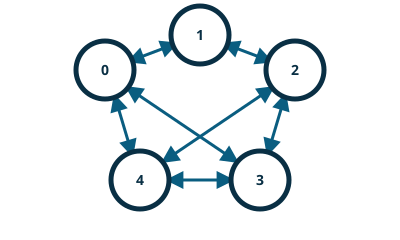

pynng / Python pattern guide

BUS — Routing
BUS lets peers exchange messages in a simple mesh.
pynng is an independently maintained Python binding for NNG. Its maintainers and release cycle are separate from the NNG core project.
This example is sourced from the project’s default branch. See the upstream example for its current history.
bus.py
"""
The bus protocol is useful for routing applications, or for building fully interconnected mesh networks.
In this pattern, messages are sent to every directly connected peer.
"""
import pynng
import trio
trio = trio
async def node(name, listen_address, contacts):
with pynng.Bus0(listen=listen_address, recv_timeout=300) as sock:
await trio.sleep(0.2) # wait for peers to bind
for contact in contacts:
sock.dial(contact)
await trio.sleep(0.2)
# wait for connects to establish
print(f"{name}: SENDING '{listen_address}' ONTO BUS")
await sock.asend(listen_address.encode())
while True:
try:
msg = await sock.arecv_msg()
print(f'{name}: RECEIVED "{msg.bytes.decode()}" FROM BUS')
except pynng.Timeout:
print(f"{name}: Timeout")
break
async def main():
async with trio.open_nursery() as nursery:
nursery.start_soon(
node,
"node0",
"ipc:///tmp/node0.ipc",
["ipc:///tmp/node1.ipc", "ipc:///tmp/node2.ipc"],
)
nursery.start_soon(
node,
"node1",
"ipc:///tmp/node1.ipc",
["ipc:///tmp/node2.ipc", "ipc:///tmp/node3.ipc"],
)
nursery.start_soon(
node,
"node2",
"ipc:///tmp/node2.ipc",
["ipc:///tmp/node3.ipc"],
)
nursery.start_soon(
node,
"node3",
"ipc:///tmp/node3.ipc",
["ipc:///tmp/node0.ipc"],
)
if __name__ == "__main__":
try:
trio.run(main)
except KeyboardInterrupt:
# that's the way the program *should* end
pass
Run it
python bus.py